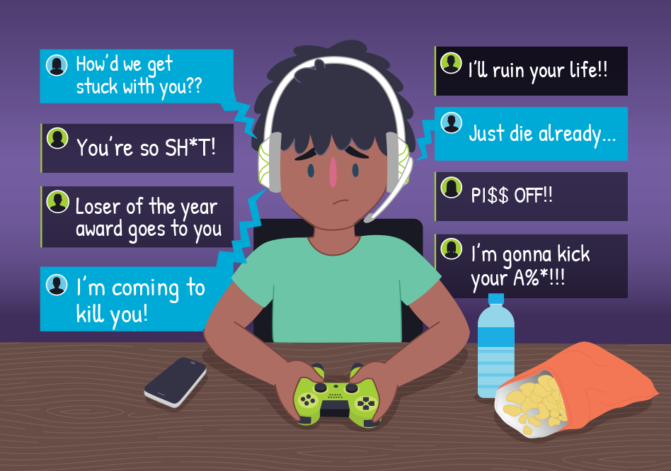

Cyberbullying: A Digital Threat
The Dark Side of Online Interaction
Cyberbullying is a silent epidemic in the digital age. Unlike traditional bullying, it follows teens everywhere — into their homes, bedrooms, and even dreams. The damage can be emotional, social, and long-lasting.
Forms of Cyberbullying:
- Public Shaming: Posting embarrassing photos or videos without consent.
- Anonymous Threats: Receiving hateful or intimidating messages from unknown accounts.
- Exclusion: Being purposely left out of group chats or online communities.
- Impersonation: Fake accounts pretending to be someone else to cause harm.
Real Impact
Victims of cyberbullying often experience isolation, poor academic performance, and emotional withdrawal. It can affect confidence and trust, even in offline friendships.